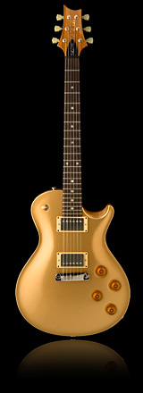
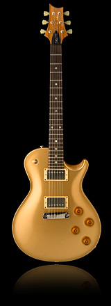

Welcome to Guitargasm.com!
Learning to play the guitar from home has never been easier
Guitargasm serves as the leader in the online video guitar lesson market. If you are just beginning to play the guitar, or are interested in improving your skills and knowledge as a guitarist, you have come to the right place.
Guitargasm is an all-purpose guitar instructional e-learning website developed by Bilawal Soomro, a BIT Degree student in Graffins College Nairobi. The website is basically aims to help aspirting players to learn basic techniques and theory by providing facts, lessons and tutorials in a very simple and organized manner.
Start off your journey in guitar playing with our beginner lessons and build a solid foundation for your playing. Since bad habits can criple the progress of any guitarist, learning from a knowledgable instructor is a must!
Guitargasm will teach you the raw basics of playing guitar, including topics such as tuning, posture, finger technique, and many other topics. Most of the instructions found in these lesson sets are very similar, just taught by different instructors. Feel free to browse these lessons and impress your girl friend by playing her favorite song!

 

PRS Guitars
If becoming the gold standard of quality in the guitar business was a remarkable achievement for PRS, equally impressive has been its maintaining that standard as the company has grown into a major industry presence. While PRS’s continuing success in this regard demands a constant re-evaluation of materials, tools, and procedures, the bottom-line goal hasn’t changed since the days when Paul Smith hand-crafted his first instruments in an upstairs loft: Build extraordinary guitars, guitars with magic.
National Sales and Marketing Manager Larry Urie: “With every increase in factory size or production output, we build in even tighter quality control to make sure our standards remain extremely high. If anything, the quality control at PRS is tighter than it’s ever been.”
Some companies see a public relations benefit to invoking the romance of historic guitars from the ’50s and ’60s, but Paul Smith knows that for the people who actually designed and built those classic instruments (people like his mentor, Ted McCarty), PR and romance were the furthest things from their minds. Their goal was to manufacture great instruments, period. Build a guitar whose tone inspires you to be a better player, whose durability will get you through a thousand gigs, whose elegance makes it an artwork in its own right. Build a guitar that players can’t put down, and the romance and the PR and all the rest will follow.
Paul Smith: “We don’t do something just because that’s the traditional way. If the best possible guitar results from using a robot for one procedure and a lot of hand-sanding or hand-inlaying for another, then that’s how we do it. Our tradition is a byproduct of our quality, so excellence is always the goal. We never lose sight of that.”
Larry Urie adds: “The automation and the individual craftsmanship go together at PRS. Using automation in one area where it produces superior results allows us to do even more handwork and detail work in those areas where there’s no substitute for the individual craftsman’s eye and skill. People who tour the factory come away amazed at how much handwork they see, and even with the machinery, it’s all dominated by the human element. It’s all about the commitment and the judgment of a highly skilled individual.”
In other words, even in the age of CNC machinery, the essence of the PRS magic still comes down to a pair of hands.
Aside from his family, friends, and business, one of the most important things in Paul Smith’s life is his music — his songwriting, guitar playing, recording, and performing. I mention it because Paul’s enthusiasm for killer tone and for exhilarating music inspires a kind of top-down passion for craftsmanship that as far as I can tell reaches to every workbench in the factory. He estimates that 80% of PRS workers are musicians; many of them gig regularly in bands. PRS President Jack Higginbotham: “These builders have a special kind of pride, an individual ownership of the instruments they’re making. Every one of them treats each guitar as their own, because it is their own. It’s a very personal thing for these builders.”
This passion for quality affects not only the work habits of individuals but also the structure of the whole company. Paul Smith: “We’re not organized like other companies. Every PRS craftsperson is a self-contained quality control ‘department.’ They have a lot of authority over their work, and if a guitar falls short in any way, they don’t pass it on to the next stage, and they make that decision themselves. They hand guitars back and forth all the time, and they inspect everything over and over. It’s like an old European guild or a shop. There’s a constant ‘is this good enough?’ conversation out there on the factory floor. So the quality control begins at the workbench. It’s not something we overlay or tack on. It’s an integral, organic part of the process, beginning with design and materials selection and going through every single step in construction and testing.”
I’ve had many conversations with Paul Smith over the past 15 years or so, most of them beginning with his asking “Guess what?” and continuing with an enthusiastic explanation of a new discovery about tone. The latest improvement to PRS guitars could be something as minor as the tonal effects of substituting a small part made of a different material. Yes, Paul Smith can hear things most of us can’t hear, or can barely hear, but what’s more remarkable is that the mechanical and engineering savvy of Paul and his brilliant collaborators enables them to convert those observations into improvements in PRS guitars — improvements you can hear and feel.
My son Joe is a black belt in karate. I always assumed the black belt was the end of the road, but he explained to me that it’s just the beginning of a new road. I sense a similar philosophy from the people who build PRS guitars. While players and magazine writers have been waxing eloquent for years about these workers’ mastery of their craft, the builders see themselves as travelers only midway on a journey of discovery. “We’re not there yet,” Paul explains. “It’s a continuing thing. We’re never finished. It’s the quest, the challeng
e — that’s what brings us to the factory every day.”
Back when he started crafting instruments one at a time, Paul Smith was steeped in the traditions of the great electric guitars of the ’50s and ’60s. Today he finds himself absorbed with the traditions of another revered company — his own. While he fondly recalls the early days of PRS, nostalgia is not a top priority. The best way he can honor the traditions of his own past is to look forward. At PRS, yesterday always takes a back seat to tomorrow. Paul Smith: “I am lucky to have an extremely talented team — not just craftspeople and artists but marketers, salespeople, programmers, administrators, and others — and everyone who works here feels the same way: We want players to know that no matter how great that old PRS guitar is, we’re pushing for the new one to be even better.”